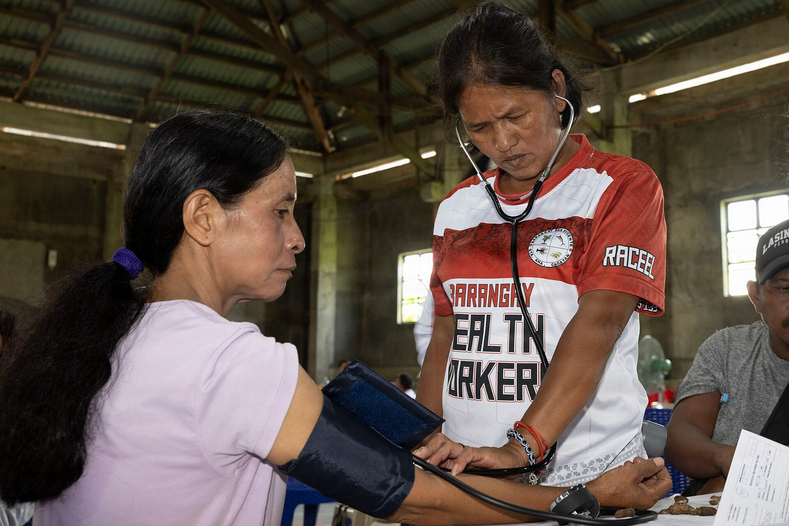

<title>TB follow-up grant</title>
<style>:root{--accent:#B91C1C;--brand:#B91C1C}</style>
<svg id="brandmark" hidden viewBox="0 0 40 40"><rect width="40" height="40" rx="10" fill="#B91C1C"/><g transform="translate(8 8)" fill="none" stroke="#fff" stroke-width="2.4" stroke-linecap="round" stroke-linejoin="round"><path d="M12 5v14M5 12h14"/></g></svg>
<section class="brand media">
  <div class="logo"></div>
  <div class="fill">
    <h1>A missed-dose text sends a health worker to the patient's door</h1>
    <p class="lede">TB treatment follow-up for Indonesia and the Philippines · grant proposal · sample deck, no applicant yet</p>
  </div>
  <figure class="pic"><figcaption class="credit">Barangay health worker, San Vicente, Philippines, 2026 · Photo: Lance Cpl. Mia Ocampo, U.S. Marine Corps, public domain, Wikimedia Commons</figcaption></figure>
  <aside class="notes">This proposal is not another reminder app. Patients get a daily text, and when they stop answering, a community health worker in their village gets an alert and visits within days. The text is the trigger. The visit is the intervention. We will run it in Indonesia and the Philippines, where the TB burden is heaviest in the region.</aside>
</section>
<section>
  <div class="eyebrow">Need</div>
  <h2>Indonesia and the Philippines carry <em>one in six</em> TB cases worldwide</h2>
  <div class="row"><div class="c8"><div class="hbars">
    <span class="l">India</span><div class="t" style="--b:100;--d:0"><i></i></div><span class="v">25%</span>
    <span class="l">Indonesia</span><div class="t hi" style="--b:40;--d:1"><i></i></div><span class="v">10%</span>
    <span class="l">Philippines</span><div class="t hi" style="--b:27.2;--d:2"><i></i></div><span class="v">6.8%</span>
    <span></span><div class="axis"><span>0</span><span>share of global TB cases, 2024</span><span>25%</span></div><span></span>
  </div></div><div class="c4"><p>Indonesia ranks second, the Philippines third.</p></div></div>
  <p class="source">Source: WHO Global TB Report 2025, section 1.1 [H1]</p>
  <aside class="notes">These are WHO estimates for 2024. Worldwide, about 10.7 million people fell ill with TB that year [H2]. Indonesia's share is ten percent and the Philippines' is six point eight [H1]. If a program works in these two countries, it touches a large part of the global problem.</aside>
</section>
<section>
  <div class="eyebrow">Need</div>
  <h2>Both countries also lead the world in patients the system misses</h2>
  <div class="row"><div class="c8"><div class="hbars">
    <span class="l">Indonesia</span><div class="t hi" style="--b:100;--d:0"><i></i></div><span class="v">10%</span>
    <span class="l">India</span><div class="t" style="--b:88;--d:1"><i></i></div><span class="v">8.8%</span>
    <span class="l">Philippines</span><div class="t hi" style="--b:75;--d:2"><i></i></div><span class="v">7.5%</span>
    <span></span><div class="axis"><span>0</span><span>share of global gap, estimated vs notified</span><span>10%</span></div><span></span>
  </div></div><div class="c4"><p>Indonesia ranks first, the Philippines third.</p></div></div>
  <p class="source">Source: WHO Global TB Report 2025, section 2.3 [H4]</p>
  <aside class="notes">Indonesia ranks first on this list and the Philippines third. People who fall out of the system before or during treatment are the ones a village health worker can find. The globally reported treatment success rate is 88 percent [H3], which means roughly one patient in eight does not finish well.</aside>
</section>
<section>
  <div class="eyebrow">Evidence against us</div>
  <h2>Reminder texts alone did not change outcomes in Pakistan</h2>
  <div class="row"><div class="c6"><div class="cols" style="--max:60">
    <div style="--v:48;--d:0"><b>48%</b><i></i><span>First two weeks</span></div>
    <div class="hi" style="--v:22;--d:1"><b>20–24%</b><i></i><span>Last two weeks</span></div>
  </div></div><div class="c6"><p>Share of patients still replying to the daily SMS. 2,207 patients in Karachi; treatment outcomes showed no significant difference.</p></div></div>
  <p class="source">Source: J-PAL, Zindagi SMS evaluation [H5] [H6]</p>
  <aside class="notes">We looked for the evidence that hurts us first. In the Zindagi trial, reply rates fell from 48 percent in the first two weeks to about a fifth by the end [H6]. In a Chinese cluster trial, texts barely moved missed doses [H7]. A 2025 meta-analysis rates the pooled evidence for digital adherence tools as very low certainty [H9].</aside>
</section>
<section>
  <div class="eyebrow">Evidence against us</div>
  <h2>In China, texts barely moved missed doses; a pill monitor did</h2>
  <div class="row"><div class="c8"><div class="hbars">
    <span class="l">Control</span><div class="t" style="--b:74.75;--d:0"><i></i></div><span class="v">29.9%</span>
    <span class="l">Text messages</span><div class="t" style="--b:68.25;--d:1"><i></i></div><span class="v">27.3%</span>
    <span class="l">Pill monitor</span><div class="t hi" style="--b:42.5;--d:2"><i></i></div><span class="v">17.0%</span>
    <span></span><div class="axis"><span>0</span><span>patient-months with a fifth of doses missed</span><span>40%</span></div><span></span>
  </div></div><div class="c4"><p>Lower is better.</p></div></div>
  <p class="source">Source: Liu et al., PLOS Medicine 2015 [H7] [H8]</p>
  <aside class="notes">The lesson we take is that a text on its own is easy to ignore. What worked better was a device that measured doses and prompted a response from the clinic. Our design keeps the cheap text but makes silence visible to a person who can act on it.</aside>
</section>
<section>
  <div class="eyebrow">Approach</div>
  <h2>We use the text to find who stopped, then send a person</h2>
  <div class="split">
    <div><div class="tl rv" style="grid-template-columns:1fr 1fr">
      <div><svg class="ico"><use href="#i-phone"/></svg><b>Day 1–14</b><span>Patient replies "1" after each dose</span></div>
      <div class="hi"><svg class="ico"><use href="#i-home"/></svg><b>2 silent days</b><span>Health worker gets the alert and visits</span></div>
    </div>
    <p class="lede" style="margin-top:40px">The text is the trigger. The visit is the intervention.</p></div>
    <div class="phone sms rv"><div class="top">TB Program<small>SMS</small></div>
      <p>Did you take today's dose? Reply 1 for yes, 2 for no.</p>
      <p class="me">1</p>
      <p>Thank you. Day 14 of 180.</p>
      <p>No reply for 2 days. Ibu Rina from the clinic will visit tomorrow.</p>
    </div>
  </div>
  <p class="source">Illustration of the proposed message flow, not a live system</p>
  <aside class="notes">Replies falling off is the data point Zindagi treated as failure. We treat it as the signal. The reason logged at each visit, whether side effects, cost of travel or stigma, becomes the dataset the ministries can use.</aside>
</section>
<section>
  <div class="eyebrow">Milestones</div>
  <h2>Three deliverables, each checkable by the funder</h2>
  <div class="gantt" style="--max:18;--ticks:6">
    <div style="--a:0;--b:3"><b>SMS and alert service<small>open source, on GitHub</small></b><i><em>Month 3</em></i></div>
    <div style="--a:3;--b:6"><b>District pilots<small>one district per country</small></b><i><em>live by Month 6</em></i></div>
    <div class="hi end" style="--a:6;--b:18"><b>Randomized evaluation<small>registered protocol</small></b><i><em>report, Month 18</em></i></div>
    <div class="ax"><b></b><p><span>0</span><span>3</span><span>6</span><span>9</span><span>12</span><span>15</span><span>18 mo</span></p></div>
  </div>
  <p class="source">Plan: proposed schedule, months from grant start</p>
  <aside class="notes">Dates are from grant start. Pilot districts are not yet chosen and depend on partner health offices. The evaluation will be pre-registered so a null result gets published too.</aside>
</section>
<section>
  <div class="eyebrow">Budget</div>
  <h2>Most of the money pays health workers, not software</h2>
  <div class="cards rv">
    <div class="hi"><svg class="ico"><use href="#i-home"/></svg><b>Health worker visits</b><span>The largest line: people, not code</span></div>
    <div><svg class="ico"><use href="#i-phone"/></svg><b>SMS</b><span>Daily dose check-ins</span></div>
    <div><svg class="ico"><use href="#i-search"/></svg><b>One evaluator</b><span>Independent, with a trial record</span></div>
    <div><svg class="ico"><use href="#i-code"/></svg><b>Open-source build</b><span>Handed to the ministries</span></div>
  </div>
  <p class="lede" style="margin-top:20px">No amounts yet; they come from the country partners.</p>
  <aside class="notes">We have not written a budget yet and will not guess one on a slide. The principle is fixed: the software is small and open source, and the spending follows the visits, because the visits are what the evidence supports.</aside>
</section>
<!-- No team slide: this is a sample deck and Plinth never invents people or partners. A real applicant adds one here
     with three named roles: a national TB programme partner in Indonesia, one in the Philippines, and an evaluator who
     has run a randomized trial before (benchmark.md, row "Team"). -->
<section>
  <div class="eyebrow">Impact</div>
  <h2>Success means beating the 88% global treatment success rate</h2>
  <div class="split"><div class="donut" style="--p:88"><div><b>88%</b><span>global treatment success, 2023 cohort</span></div></div>
    <div><p>Roughly one patient in eight does not finish treatment well: the group a village visit can reach.</p><p class="lede">We report both arms against this baseline, whatever the result.</p></div></div>
  <p class="source">Source: WHO Global TB Report 2025, section 2.3 [H3]</p>
  <aside class="notes">Pooled trials of digital tools show at best a modest gain, an odds ratio of about 1.14 with an interval that touches no effect [H9]. We expect a small effect and have sized the evaluation to detect one, or to say clearly that it is not there.</aside>
</section>
<section>
  <div class="eyebrow">Sustainability</div>
  <h2>If the visits work, the ministries keep the alerts</h2>
  <div class="row"><div class="c6"><div class="cols" style="--max:22">
    <div class="hi" style="--v:5.9;--d:0"><b>US$5.9 bn</b><i></i><span>Available, 2024</span></div>
    <div style="--v:22;--d:1"><b>US$22 bn</b><i></i><span>Target, 2027</span></div>
  </div></div><div class="c6"><p>Global TB funding covers about a quarter of the target.</p><p class="lede">Open-source code, handed to national TB programs: cheap to keep running.</p></div></div>
  <p class="source">Source: WHO Global TB Report, as reported [H10]</p>
  <aside class="notes">Global TB funding is short: about 5.9 billion dollars in 2024 against a 22 billion target, as reported from the WHO report [H10]. That argues for a tool that is cheap to keep running and that ministries own, not one that needs us.</aside>
</section>
